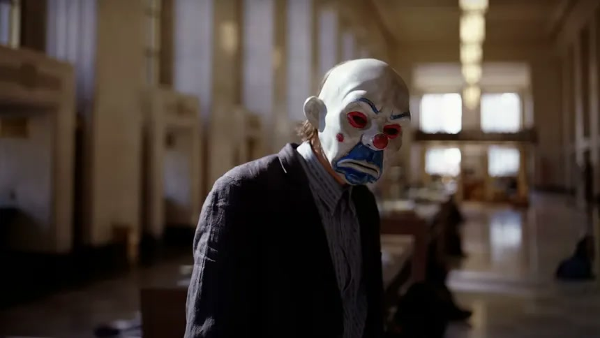
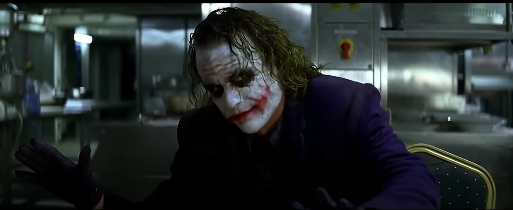
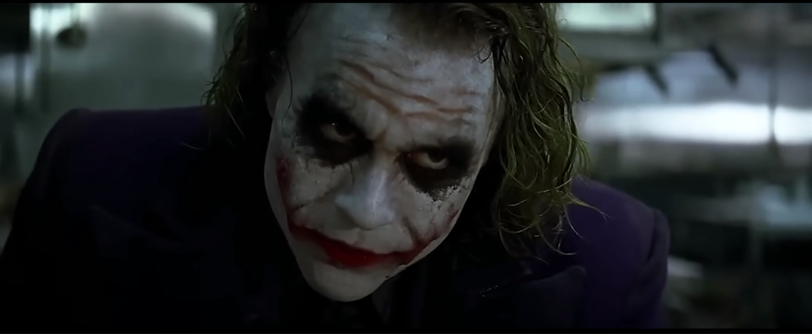
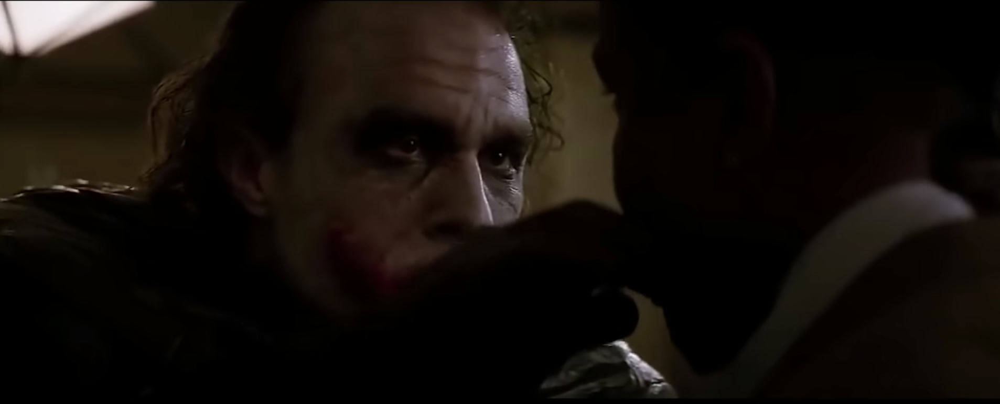

— I'm betting the joker told you to kill me as soon as we loaded the cash.
— No, no, no, no, I kill the bus driver.
— Bus driver? What bus driver?

— I'm betting the joker told you to kill me as soon as we loaded the cash.
— No, no, no, no, I kill the bus driver.
— Bus driver? What bus driver?

— And I thought my jokes were bad.
— Give me one reason why I shouldn't have my boy here pull your head off.
— How about a magic trick?
I'm gonna make this pencil disappear.
Tadaaam. It's... It's gooone.
Oh, and by the way, the suit, it wasn't cheap. You ought to know, you bought it.

— If you're good at something, never do it for free.
— How much you want?
— Umm... Half.
— You're crazy.
— I'm not. No, I'm not.

— So, dead? That's five hundred.
— How about alive?
— Wanna know how I got these scars? My father was a drinker and a fiend. And one night he goes off crazier than usual. Mummy gets the kitchen knife to defend herself. He doesn't like that: Not. One. Bit.
So, me watching, he takes the knife to her, laughing while he does it. He turns to me, and he says, "Why so serious, son?"
He comes at me with the knife, "Why so serious, son?"
He sticks the blade in my mouth, "Let's put a smile on that face..."
Aaand why so serious?
